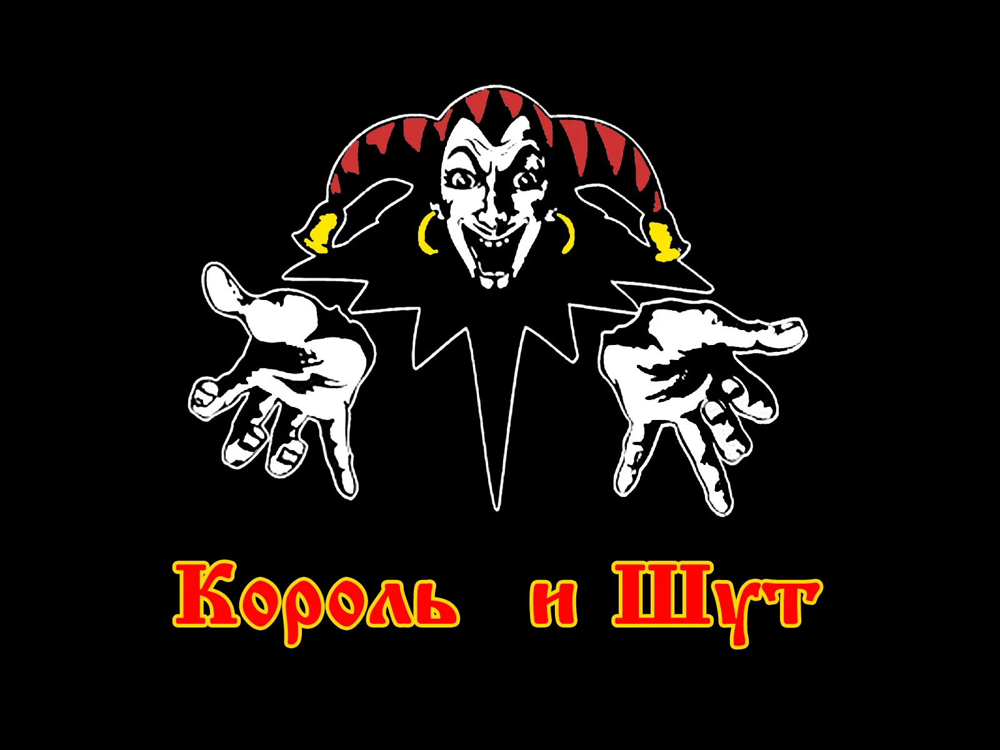
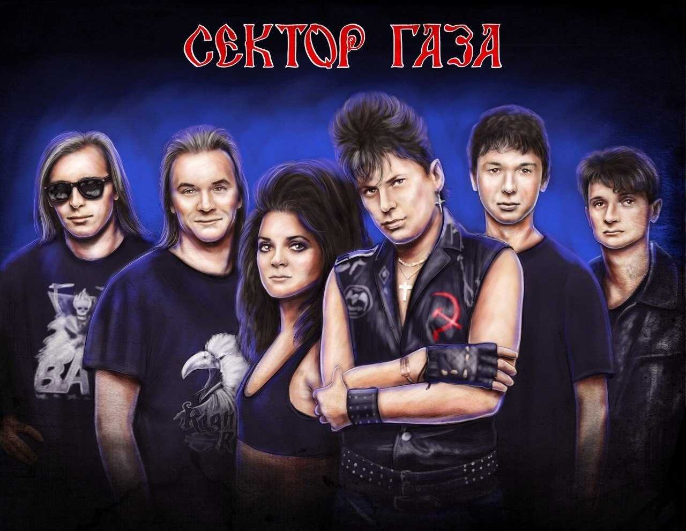
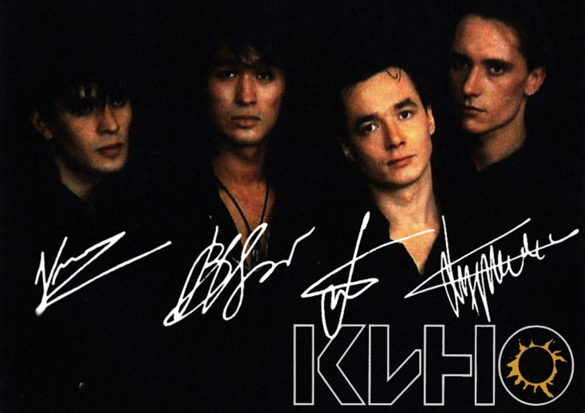
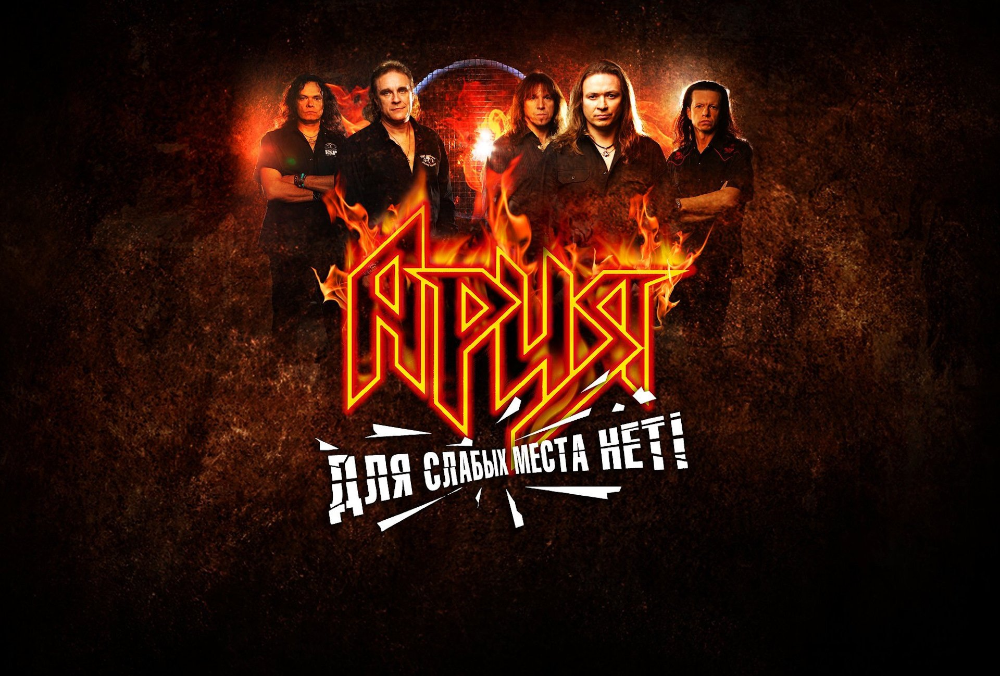

Король и Шут
Song 1
Song 2
Song 3

Сектор Газа
Туман
Лирика
Бомж
Ленинград
Ч.П.Х.
Экспонат
В Питере — пить

Кино
Группа Крови
Мы ждем перемен
Мы ждем перемен

Ария
Улица Роз
Осколок льда
Возьми мое сердце